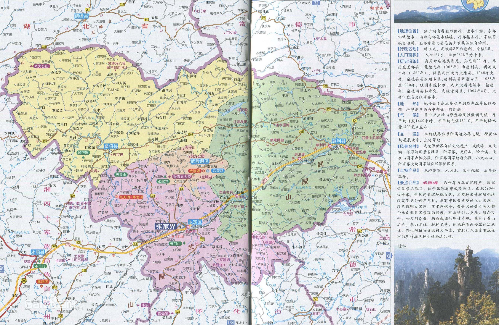

位置境域 张家界市，地处北纬28°52′—29°48′、东经109°40′—111°20′之间， 是湖南省西北部一个正在开发、建设，以发展张家界旅游业为特征的新兴省辖地级市，北邻湖北省。 [9] 张家界市位于湖南省西北部，地处云贵高原隆起与洞庭湖沉降区结合部，介于东经109度40分至111度20分、北纬28度52分至29度48分之间，东接石门、桃源县，南邻沅陵县，北抵湖北省的鹤峰、宣恩县。市界东西最长167公里，南北最宽96公里。张家界市总面积9653平方公里，占湖南省面积的4.5%。